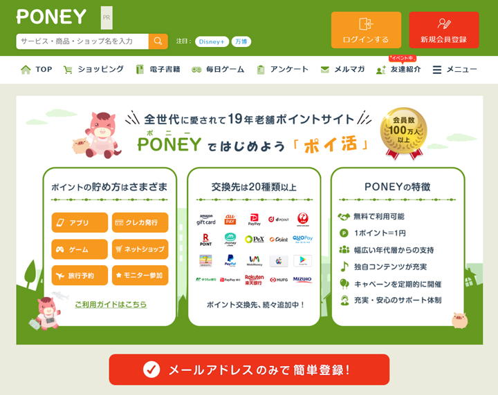
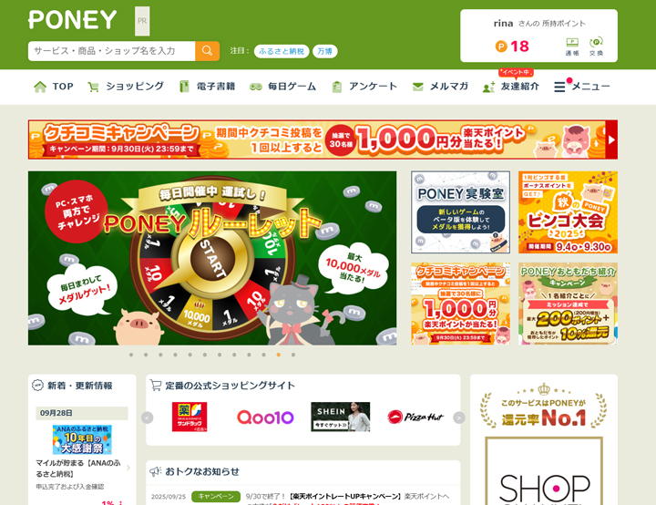
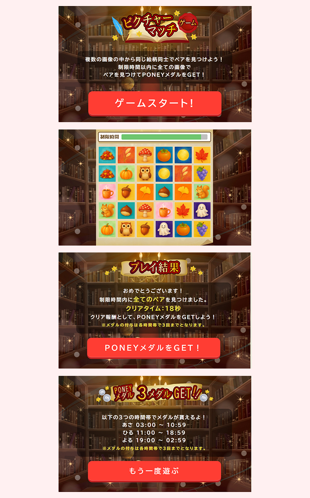
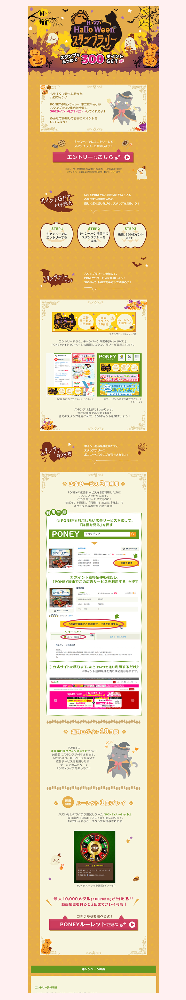

インハウスWEBデザイナー／サブマネージャーとして、
ポイントサイト「PONEY」の運用・制作を幅広く担当しました。
キャンペーン企画からデザイン制作、SNS運用、メルマガ作成、サイト改修、データ分析、ブラウザゲーム企画・デザイン・HTML/CSS実装、まで一貫して携わり、
ユーザー利用促進と集客力向上に貢献しました。
URL
担当
・サブマネージャーとして進行管理・ディレクション（クライアントとの調整・折衝を含む）
・独自キャンペーンの企画～デザイン（季節イベントやプロモーションLPなど）
・SNS運用（X・Instagram）による情報発信と集客施策
・PC版メールマガジンのデザイン・ライティング（ユーザー行動を意識した構成）
・広告向けブラウザゲーム（アドゲーム）制作：企画・デザイン・HTML/CSS調整、システム連携あり
・サイト改修（UI/UX改善、導線設計）
・SEO対策・集客施策の実施（検索流入・キャンペーン誘導）
・バナー・ランディングページ制作（キャンペーン告知用）
・他システムとのデータ連携対応（OWシステムとの接続）
・ユーザーアンケートを自ら企画・作成・運用し、サービス改善に反映（PONEYリサーチ）
・広告案件ページ作成（自社管理画面を活用した制作・運用）
・データ分析（Clarity・Google Analyticsによるユーザー行動解析、改善施策提案）
工夫した点
・直感的に分かりやすいUI/UXを意識したサイト改修
・「お得感」「参加したくなる楽しさ」が伝わるキャンペーンデザイン
・SNSやメルマガとの連動によるユーザー接点拡大
・ブラウザゲームでは企画・デザインだけでなくフロント実装も行い、ゲームを通じてサイト利用や反応を促進
・データ分析を活用した改善サイクルの実施
TOPページ改修について
ユーザーがサービスの魅力を直感的に理解できるよう、ファーストビューバナーの見せ方を改善しました。
訴求内容を整理し、余白や視線の流れを意識したレイアウトにすることで、キャンペーン情報が自然に目に入るデザインに仕上げています
また、PCとスマートフォンの両方で最適に表示されるよう調整し、バナー経由でキャンペーンページや詳細ページへ進むユーザーの数を増やしました。
さらに、バナーの露出優先度をスプレッドシートで管理し、毎月どのタイミングでどのバナーを表示するかをメンバー全員で共有。
バナーの表示スケジュールを管理し、チーム全員が同じ情報をもとに作業できる体制を整えました。
【TOPページ改修（PC/SP）】 
PONEY実験室 ベータ版アドゲーム開発について
PONEY実験室のベータ版ゲーム「ピクチャーマッチ」において、企画からタイトル・世界観の設定、デザイン、HTML/CSS コーディング、システム連携まで、制作全般を担当しました。
開発はスピード重視で進め、企画から実装までわずか1週間で完成させました。
今後、他社のポイントサイトメディアへの展開も見据え、汎用性の高い設計・構造で実装しており、短期間ながら多岐にわたる作業範囲を統括して進めたプロジェクトです。
【PONEY実験室 ベータ版アドゲーム開発】 URL: https://www.poney.jp/lab/picmatch/top 
キャンペーンの企画・WEBデザインについて
ハロウィンキャンペーンでは、プロジェクトリーダーとして企画段階から携わり、LPだけでなくバナーやメルマガ、お知らせなど、キャンペーン露出に関わるすべてのデザイン・運用を統括しました。
ページやバナーの構成、配色、フォント、CTAボタンの配置などを工夫し、ユーザーが直感的に内容を理解しやすいデザインに仕上げています。
また、公開スケジュールや素材管理をチームで共有・統括し、制作から公開までの流れを円滑に進めました。
【キャンペーンLP】 